-
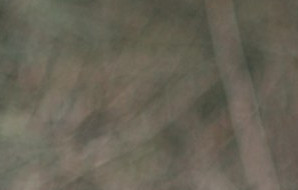2012
хочешь знать, что значит твоя улыбка?
как иллюзорный мир. гордость, любовь, пытка...
однообразный ритм дней и ночей прожит,
мы здесь и теперь, радость и смех, можем!
яркие вспышки света, когда ты в моих руках...
искренность моя правда, сладки твои уста..
ты ангел, что явился с неба или человек, что стал ангелом для меня.
ты вера, надежда, воздух, зависимость, правда моя.. -
2012
чарiвна дiвчина, скажи,
що буде ввечерi сьогоднi,
що буде далi, розкажи...
мої ж вуста сумнi, голоднi,
чекають поцiлункiв, слiв...
о мила дiвчино, я прошу,
гадаю, думаю, мовчу,
чекаю, гублюсь, трохи трушу,
бо через Вас я знов живу!
Ви нiжна, лагiдна, дотепна,
гарнюня, чиста, вольова,
смiлива, щедра, добра, чуйна...
вiд серця линуть цi слова. -
м.л.т.
моя мечта, моя надежда,
а если даже моё всё?
шепчу тебе все строки нежно,
люблю тебя, люблю, люблю...
юнец я просто, или кто-то?
бывает сам я не пойму,
лишь ты моя, а значит просто,
юлить не буду, всё смогу!
так говорить возможно рано,
еще возможно рано всё,
большая просьба, как ни странно,
я Вас принять меня прошу. -
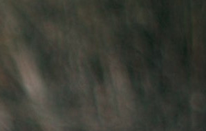29.12.2013
Знаешь, мне холодно и пусто без тебя...
И это сломанное чувство, теребя
Перебираю мысленно поступки с горяча
Я просыпаюсь снова без тебя... -
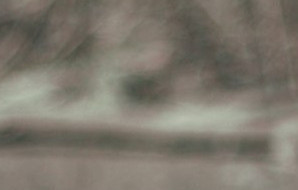07.07.14
рифмуя мысли лишь частями, я слишком много промолчу.
тебя забыть не понимаю, тебя забыть я не могу.
заветный остров искушения - моя больная голова,
мои надежды, размышления не соответствуют словам...
так просто всё, и сложно вовсе
и почему всё как-то вдруг?
ведь были мы и было солнце,
а нету чувств в одном из двух....
я так один, что слишком сложно
понять меня даже тебе..
прошу заметить то, что важно
моя ты, хоть и в сне....
любимая, какие строки
вобьют в тебя мою главу?
желание свернуть истоки
я как букашку раздавлю!
любимая, меня Вы не любили
не знали Вы, что в сонмище людском
лишь грязь и ложь, а МЫ были!!!
не вспомнят только ни о ком.... -
21.07.15
я скоро не смогу, сдержать потоки чувств.
я скоро разорву, причину тупой боли.
ты, искренне, прости. не нужно больше крови.
не нужно больше вешать тяжкий груз.
ты там я здесь. ломает расстояние.
я твой. ты ж, просто, навсегда.
люблю тебя, молю тебя, не надо..
давай расставим все на старые места.
пойми, что в одиночестве нет места двоим,
ты провела черту, но кто поставит точку?
я закрываю глаза и я не один,
снаружи цел, а внутри в клочья.. -
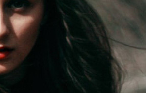04.08.15
есть человек, что пуст внутри,
не ощущает интереса.
ему вперед пора идти.
но на уме только принцесса.
есть человек, что счастлив ныне.
это не он. он не живет.
сутра встает и шепчет имя.
в ночи во сне ее зовет.
есть человек, который мил.
он был таким, но не до селе.
он снова все опять сломил.
он снова дышит еле-еле.
есть человек, что помнит счастье,
что помнит солнце на плече.
осталось всё в забытой басне,
осталось всё в этом письме.
есть человек, что забирает,
нашу любовь, наши мечты.
нашу судьбу с тобой ломает,
практиковав себе цветы.
надеюсь, слово человека,
надуманное сгоряча,
нам не окажется помехой.
и мы откажемся скучать... -
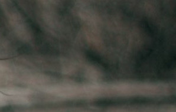11.08.15
Эхом пронзает мелодия твоего голоса.
Раньше я был глух, но теперь иначе.
Голод не дает уснуть, кончились полосы.
Ни белой, ни черной. Что дальше?
Мурашки по коже от твоих упреков.
Говорил понимал, теперь понимаю.
Рано начал терять, стало больше пороков.
Куда больше? Позади оставляю...
Кончилось.. я нам все разрушил.
Был слеп, ты так долго молчала.
Все еще я пленен. На деле не нужен.
В параллельной вселенной снова с начала.
Жалит происходящее и сжалось внутри.
Снова кончились мысли, досадно.
Мои слова, бред, мотивы глупы.
Проиграна битва, растерзан изрядно.
"Мы", осталось закрыто в чулан.
"Мы", порхает во мне неизменно.
"Мы", это как чудеса и талант.
На деле упорство, работа. Бесценно... -
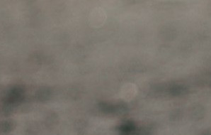20.09.15
Небо плюнуло звездой,
Я выплюнул желание.
Чтоб в каждом был кто-то родной.
Минуя расстояние. -
15.10.15
знаешь, мы на расстоянии метров,
а лишь по твоим следам хожу.
каждая девушка в красном сбивает с толку
и по другому я не могу.
не имеет значения правда
и мыслями что в голове
ломаю иллюзию грани
отброшенных нами проблемм
экзистенциальный вакуум забиваю дерьмом и капризами.
жизнь наполняю лучами обыденной лжи.
все будет хорошо, а по истине
окончание каждого вечера не сравнимо со словом "жив".
эгоцентризм воспитываю,
но интроверсия в голове
дает лишь апофению восприятия
и дискриманацию отдельных людей.
однако,
с миром, не с тобой, я бы был сильным,
для тебя жив был, но не им быть.
я бы не молчал, тебе, но не с тобой.
я извлек урок, без тебя, не вышел прок.
как видишь, все мысли смешались.
изо дня в день одна ты на уме
и перцепцией ночью приходишь,
восполняя то, что закончено ныне из вне.. -
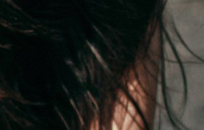21.10.15
Я пишу тебе, ты не читаешь, не смотришь
Как я скучаю и как я люблю
И когда непосильно, нет мочи,
Я мысленно тебя обниму...
Мне кажется, нет места смирению.
И не зачем вовсе страдать.
Но сердце не внемлет учению,
Его уже поздно менять..
из действий своих строю волю я,
сжимаю ее в кулаки.
теперь твоя стена мокрая
от крови моей и тоски. -
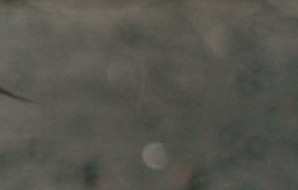25.10.15
знаешь, я дурак, ведь хочу на прощание танца.
и мудак, ведь за тобою грущу.
кто угодно желал бы сексом заняться,
кто угодно, не я, и я не шучу.
на длинной тропе, ты не одна.
так мне говорят и так жизнь обещает.
любви ведь не видели дна!!!
но один из нас, увы, не страдает)
скажи, зачем я так верил тебе?
почему перестал улыбаться?
ведь все это не только нравилось мне,
и с другими так не удастся!!
ты жалишь больнее удара в лицо,
и дура ты, Маша, дура.
кем нужно быть чтобы парой слов
довести все до такого абсурда...
благодарю, за чувств своих искривление,
за глупую радость и дикий позор.
объятие - это подарок на день рождение..
подарком было б не слышать таких слов... -
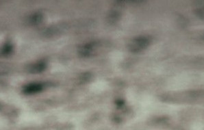30.10.15
как хочется уткнуться носом в твои колени,
лежа под рукой закрыть глаза.
уснуть, и не взирая на секундной стрелки время,
так жить, не просыпаясь никогда.
___________________________
на поводке твоем словно шавка.
хвостом виляя за тобой бегу.
кинь любовь мою, это палка,
я в зубах ее принесу -
31.10.15
Вселенная со мною шутит, шутница
Изо дня в день только новая жесть.
С тобою за жизнь был готов биться.
Без тебя хочу умереть.
Мы встретимся снова и это заветно.
Сейчас я в зыбучем песке.
Наша любовь восстанет из пепла
Сгорело все и я на волоске..
Хочу снова тобою напиться,
Исчерпан лимит частицы тебя
Мне перестала любовь наша сниться
И словно секунда каждая зря
Голова болит, сердце сжется
В глазах страх и пустоты глубина
Всё вокруг надо мною смеется
Проёбок я, как всегда
И толку нам от моих стихов
Я не могу вынести расстояния метров
Ты и я без лишних слов
Оккупанты разных сторон созданных моментов. -
31.10.15 (на хэллоуин)
Придти и возле сесть.
Свидание или смерть?) -
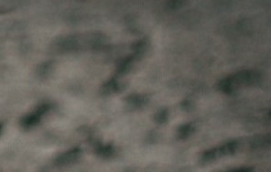07.11.15
двадцать четвертый день календаря...
теперь мучительно, всегда азартно.
и кажется, что в память на века
наш выбор, мир, мгновения..приятно.
но не за то меня ты ненавидишь,
как поумнеешь, позвони, я подожду.
эх, эти принципы, которые лелеешь
из кулака я выйму, разорву..
но этот стих, наверно, закрывает цикл
и больше не тебе, а про тебя.
и образ твой, с которым свык
давно не ты, так, для меня.
словам моим не достучатся до небес
и нету в них того уже заплёта.
да и в тебе они лишь вызывают смех,
так, строчки долбоёба.
и пусть не в рифму, следующее слово,
и умысел сам изначально глуп
я это обязательство выполню дословно
и слов твоих я не услышу. глух.
давно я на отшибе с головой
хожу по улице, сжимая зажигалку..
при встрече не с одной тобой
я об него повыбиваю пальцы.. -
 17.11.15
17.11.15
я хочу быть любимым тобой
и не видеть этого сна
но чтоб вечной судьбой
были скреплены наши сердца.
этот мир отравлен людьми
эта жизнь пуста и темна.
ты меня с собою возьми
в целом мире ты такая одна.
я не вижу где правда и ложь
и застыл я в мертвой глуши
что мне жизнь, если ты оттолкнешь
без меня, я прошу, не дыши.
пусть другие и дарят цветы
я смешаю их с прахом земным
кто не любит меня, так это не ты
ты властитель над сердцем моим.
это утопия искать вторую тебя.
без упреков, без слез, без затей
такого отдаю я себя
подари любви снова своей! -
09.12.15 (про сон 5 декабря)
Мне снился сон на новом месте,
Я был в костюме и в широком зале
А в длинном платье белом и на каблуках
Ты. Играла роль, которую забыла. Которую я бережно храню еще во снах...
Из рук своих сложили пирамиду,
А носом я своим, твой прижимал.
И мы сидели, мило говорили
О чем-то тихо, ну как люди говорят.
И не было даже секунды скучно,
И так бывало с нами каждый час.
Ты тоненькая, словно спичка,
Высокая такая, ну прям в самый раз.
Я шаг вперед к тебе, ты шаг назад
Чуть поворот и ты вперед шагаешь.
И это вальс, как будто снова прижимаешь.
И норовишь еще поцеловать.
А дальше утро, а не сон.
Подъем, обыденность и завтрак,
И куча дел слепились в унисон,
И смыли твоих очей бархат. -
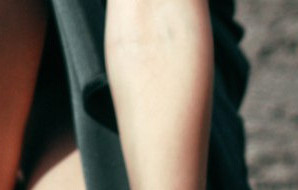08.01.16
Именно ты и волнение
Голову сводит мою вольнота
Я твое вижу видение
Любви твоя голота
Эта черная материя
Твоих волос, глаз глубина
Моя вселенная
Моя вина -
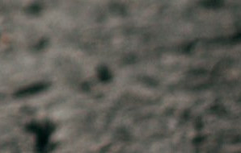
Рассказ пишу, правда моментами. Адрес называется. сейчас особо времени нет. заметки только набрасываю, а сесть писать не получается. как более менее будет там что, пришлю конечно. про тебя же там упоминается, а так о моей повседневности больше, в стиле ежедневника, с вставками небольшой фантастики и рассуждений-переживаний.
дела нормально у меня. собеседование завтра. сижу, волнуюсь и не сплю ночами. от мамы привет. вместе с нею мечтаем, чтобы мы помирились с тобой. она даже сны загадывает. говорит, что помиримся. и прям твердо верит в это. а я смеюсь. но тоже верю.